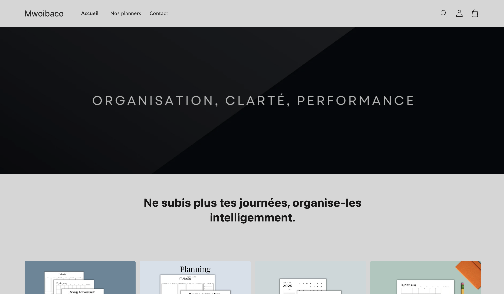

Je suis Ansufdine Ousseni
Étudiant en Informatique & Entrepreneur
À propos de moi
Étudiant en BUT Informatique à l’IUT d’Annecy, je suis animé par la passion du développement web, des bases de données et de l’entrepreneuriat. Déterminé à exceller autant dans l’ingénierie que dans le monde des affaires, je construis des projets concrets pour renforcer mes compétences, donner du sens à mon apprentissage et avancer vers mes ambitions.
Mes projets
Création de la boutique Mwoibaco
Conception de planners et calendriers numériques. Gestion Shopify, marketing, branding.
 Voir le siteCompétences
- HTML / CSS
- PHP / SQL / C#
- Visual Studio Code, pgAdmin, Canva Pro, Notion, Figma
- Gestion de projet, organisation, rigueur
Contact
Email : ansufdine.ousseni@etu.univ-smb.fr
Localisation : Annecy, France